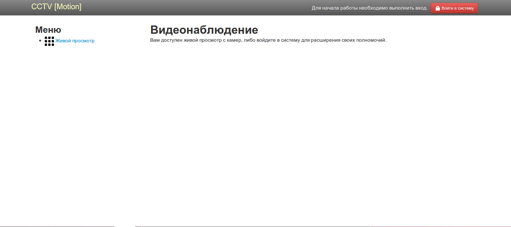
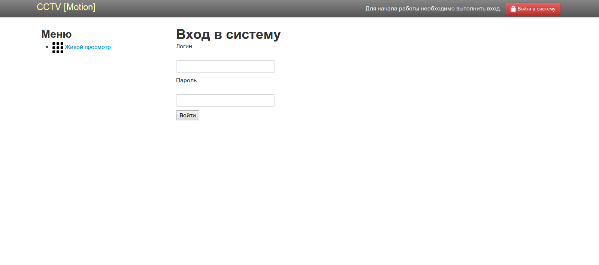
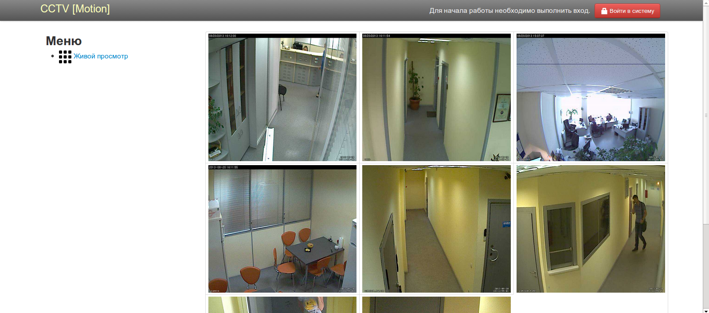
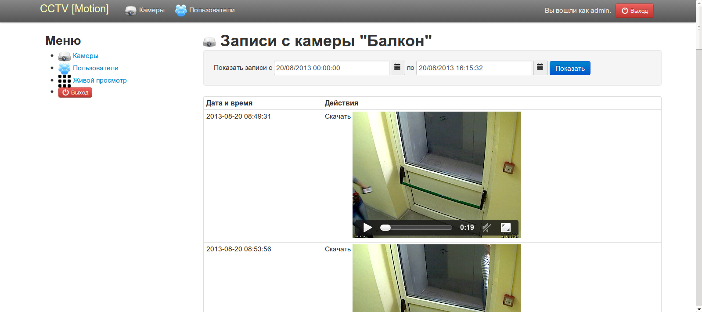
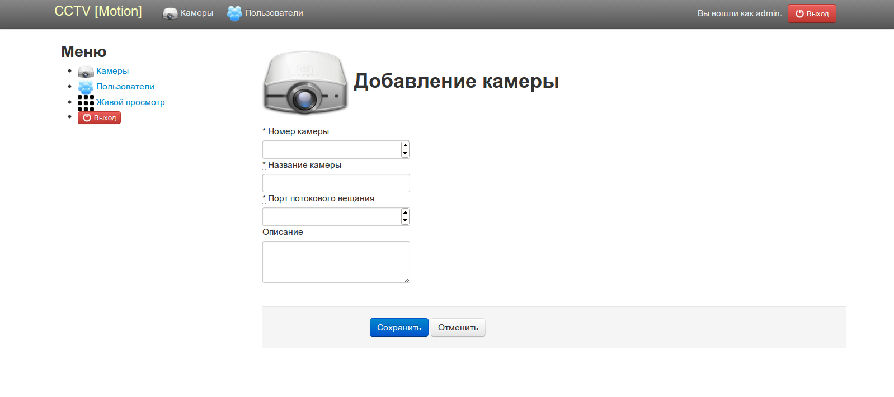

После обновления видеосервера под debian, было принято решение переделать систему видеонаблюдения.
Motion было решено оставить, но возникла необходимость в более человеческом интерфейсе для просмотра архивных записей. Очередные поиски в Интернет так и не дали никаких приемлемых результатов, в результате чего было принято решение о создании собственного продукта. После небольших колебаний, выбор пал на Rails. Никакой религии, просто захотелось получше изучить этот фреймворк и замечательный язык программирования. В качестве СУБД используется PostgreSQL. Результат работы под капотом...
Для начала чуть-чуть поподробнее про настройку motion.
В связи с тем, что хотелось, по-возможности, обойтись чистым HTML5, пришлось переустановить motion вручную, включив ему поддержку записи файлов в ogg. Благо авторы данной программы реализовали ее, за что им большое спасибо. Процесс сборки и установки описан хорошо на странице проекта, поэтому не буду его здесь расписывать, тем более, что под разные дистрибутивы он будет отличаться. Ссылка на домашнюю страницу www.lavrsen.dk/foswiki/bin/view/Motion/MotionGuideInstallation.
Заострю внимание только на настройке продукта.
Так как изначально motion был установлен из пакетов, то после переустановки не стал переносить папку с конфигурацией из /etc в /usr/local/etc. И еще один пункт, сам motion запускается при помощи runit, поэтому в конфиге он отключен режим демона. Расстановка сил следующая:
Структура таблицы
CREATE TABLE records
(
id serial NOT NULL,
thread integer,
filename character varying(255),
frame integer,
file_type integer,
event_timestamp timestamp without time zone,
created_at timestamp without time zone NOT NULL,
updated_at timestamp without time zone NOT NULL,
CONSTRAINT records_pkey PRIMARY KEY (id )
)
WITH (
OIDS=FALSE
);
ALTER TABLE records
OWNER TO motion;
-- Index: thread
-- DROP INDEX thread;
CREATE INDEX thread
ON records
USING btree
(thread );
4. Для живого просмотра (в режиме реального времени) с камер использутеся интерфейс motion.
Основные изменения в конфиге следующие:
/etc/motion.conf
ffmpeg_video_codec ogg
webcontrol_port 8080
webcontrol_localhost off (в том случае, если web-interface будет запускаться на другом сервере)
webcontrol_html_output on
webcontrol_authentication login:pass
sql_query insert into records(thread, filename, frame, file_type, event_timestamp, created_at, updated_at) values('%t', '%f', '%q', '%n', '%Y-%m-%d %T', NOW(), NOW())
И соответственно настройки для подключения к БД.
Далее подключаем камеры
thread /etc/motion/thread1.conf
thread /etc/motion/thread2.conf
…
thread /etc/motion/threadN.conf,
где N зависит от количества наших камер.
Основные пункты в threadX.conf, где X — любое число
stream_port PortNumber — данный порт надо будет писать в поле «Порт потокового вещания» при настройке камер в web-interface. Это основные изменения при настройке motion. Как настроить сам motion в данной статье расписывать не буду. По настройке Rails хорошо расписано в статье habrahabr.ru/post/140910. Также может возникнуть необходимость в установке NodeJS — github.com/joyent/node/wiki/Installing-Node.js-via-package-manager
Теперь перейдем непосредственно к настройке интерфейса:
1. Клонировать при помощи git сайт.
Bitbucket:
git clone webdev4u@bitbucket.org/webdev4u/motion_web.git
Github:
git clone github.com/webdev4u/motion_web.git
2. Переименовать config/settings.local.yml в config/settings.yml и вписать туда адрес сервера, на котором запущен motion.
3. Переименовать config/database.yml.example в config/database.yml и вписать туда настройки для вашей базы.
4. Измените данные в db/seeds.rb для пользователя admin.
5. rake db:migrate
6. rake db:seed
7. Для проверки можно будет запустить rails s. Сервер будет слушать на 3000 порту. Если все нормально, можно работать.
8. И напоследок, настроить задание для крона по чистке базы. По умолчанию хранятся записи за 21 день, но можно изменить этот параметр в файле app/models/record.rb 12 строка, но лучше в lib/tasks/crontask.rake строку
Record.clean_old_records
заменить на
Record.clean_old_records Нужное_количество_дней.
После чего прогнать команду
whenever --update-crontab
из под пользователя, от имени которого будет работать сайт.
Скриншоты
Скриншот главной страницы:

Страница входа:

Живой просмотр:

Список камер:
Просмотр архива:

Добавление пользователя:

Добавление камеры: